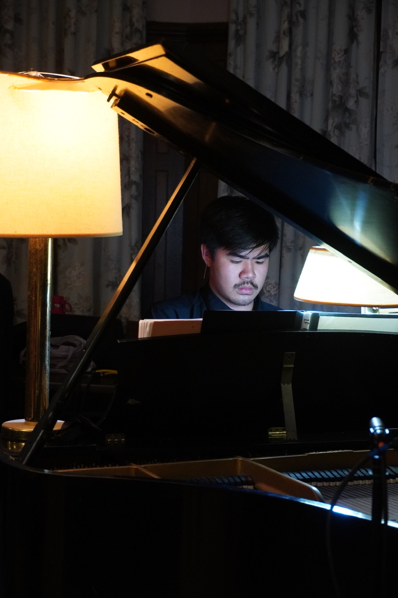
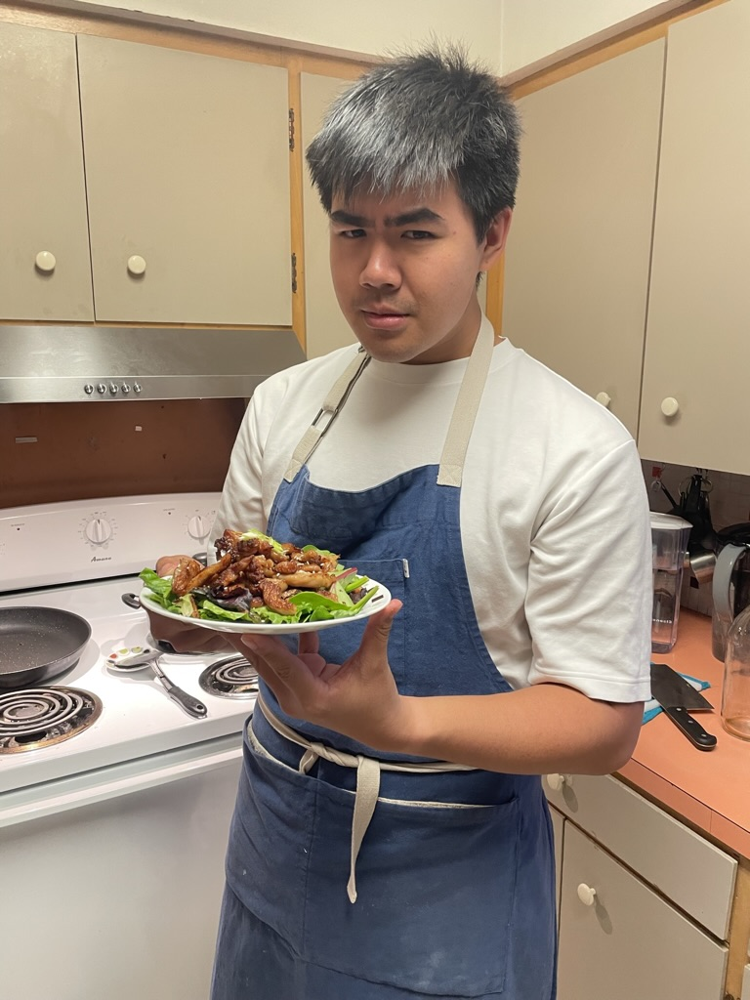
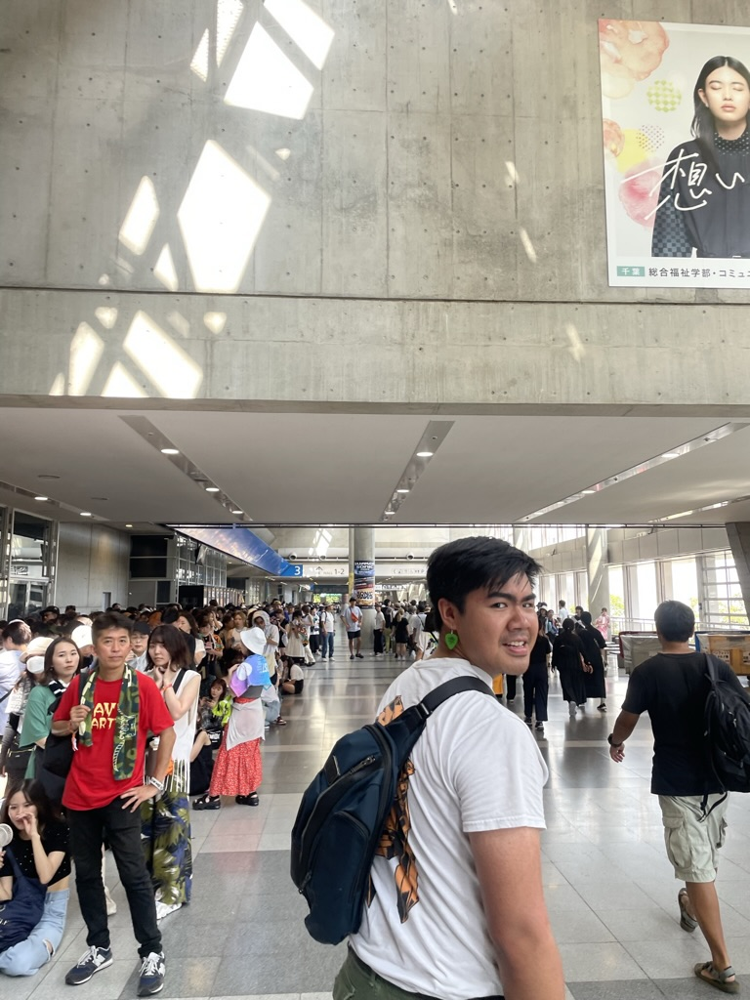

Skills & Interests
- Programming Languages: Python, Java, JavaScript, C, C++
- Languages: Fluent in Thai and English, conversational in Danish, proficient in reading/writing German and Russian
- Music: Multi-instrumentalist, band leader for Badphayak
- Hobbies: Writing music and cooking
- Aspirations: Aspiring cognitive psychology researcher
- Current Role: Supporting student music at Grinnell College through work at Freesound
- Education: Grinnell College '24, studying Computer Science and Psychology
Current Role: As a Freesound Manager at Grinnell College, I actively facilitate student music on campus, hosting large-scale events that showcase student talent. These events not only provide entertainment but also a platform for budding artists. Check out our work on Freesound's Instagram.

Composing and performing music, sharing them with the communities around me.

Experimenting with new recipes and flavors in the kitchen.

Originally from Thailand, I am grateful for exploring the world through opportunities.